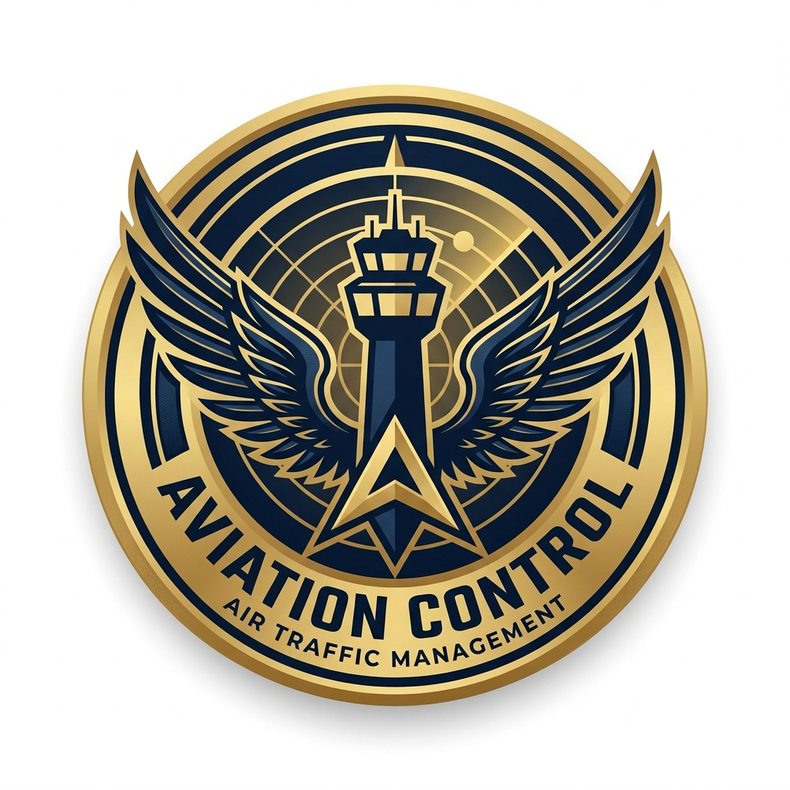
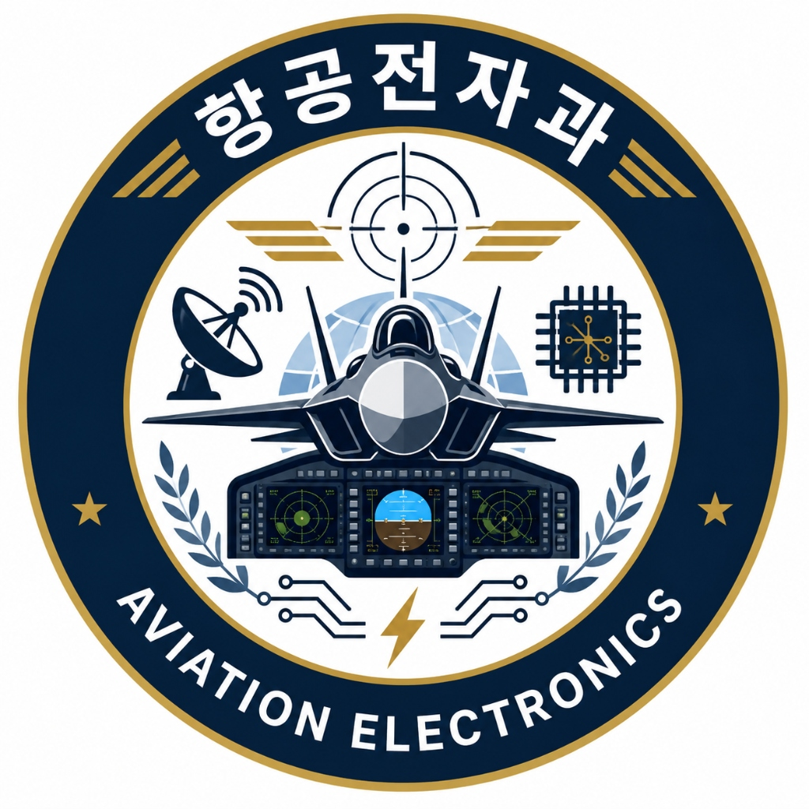
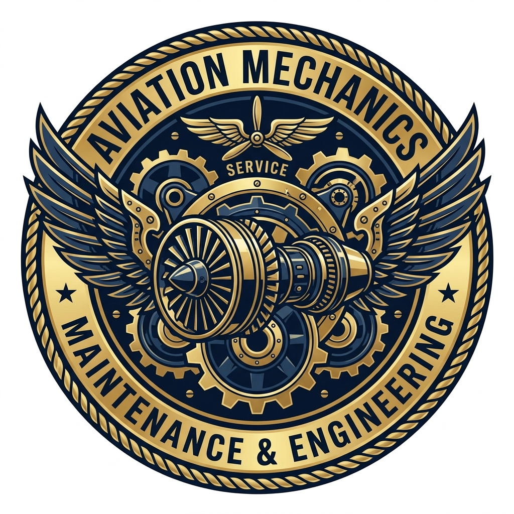

공군항공과학고등학교
전공 소개
참되고! 슬기롭고! 씩씩하게!
가. 학교 특성
📚 한눈에 보는 목차
공군 정예 기술 부사관
졸업과 동시에 전원 공군 기술 부사관(하사)으로 임관합니다.
전액 국비 지원
입학금, 수업료, 기숙사비 등 생활비 전액 면제와 매월 소정의 월급이 지급됩니다.
항공 우주 분야 기술
항공기 정비, 정보통신 등 공군 비행단의 시스템과 연계된 수준 높은 마이스터 교육을 받습니다.
나. 학교 교육과정
공군항공과학고등학교 특기 교육의 이해 및 5개 핵심 세부 주제별 교육과정입니다. 아래 탭과 버튼을 이용해 넘겨보세요.
🎓 공군항공과학고등학교 특기 교육의 이해
"우리 공군항공과학고등학교에 입학한 학생들은 전문기술인으로서 뛰어난 잠재역량을 가진 사람일 것이라는 기대를 받습니다. 높은 경쟁률을 뚫고 입학한 뛰어난 역량의 학생들에게는 어쩌면 당연한 기대일지도 모르지만 당사자는 부담스러울 수도 있겠습니다. 전문기술도 익혀야 하고, 동시에 잠재역량(학습역량)도 길러야 한다니...
여러분 항공과학고등학교 학생에게 기대되는 바는 두 가지입니다. 첫째는 전문기술인입니다. 둘째 주제는 외국어 능력과 학습 능력을 갖춘 잠재역량인입니다. 이 둘은 모순되는 것은 아니지만, 시간이 충분하지 않다면 둘 중에 한 가지를 선택해야 하는 주제입니다. 고등학교에서의 3년이라는 시간도 그리 충분한 시간은 아닙니다. 이 두 가지를 모두 충족하기 위해서는 너무 짧습니다.
이 두 주장 모두 중요한 생각에 뿌리를 두고 있습니다. 전문기술을 익혀야 한다는 주장은 항공과학 분야 기술부사관을 양성하는 공군항공과학고등학교의 설립 목적에 뿌리를 두고 있습니다. 그런가 하면, 잠재역량을 강화해야 한다는 주장은 우선 고등학교 3년만으로 전문기술인이 되기에는 어려움이 있다고 봅니다. 왜냐하면 전문기술이라는 것은 일정 시간 현장에서의 특정 임무의 반복 시행을 통해 가능한 일이라고 보는 것이죠. 이것은 현장에서의 경험이 없는 상태에서 학교 교육만으로는 아무래도 역부족입니다. 그래서 이 입장에서는 단순 반복 훈련보다는 변화하는 현장 환경에서의 적응력과 학습력을 키우는 것이 우리 공군항공과학고등학교 입장에서는 더욱 중요하다고 봅니다. 외부의 기대에 비해 우리가 할 수 있는 것은 한계가 있어요. 여러분은 어느 쪽이 중요하다고 보세요?"
"군 정예기술 간부 양성이 우리 학교 교육의 실제 목표입니다. 그래서 실무부대의 수요를 파악하고, 그것을 교육 내용에 적극 반영해 왔습니다. 마이스터고등학교는 영마이스터를 길러내는 학교이고, 우리 학교도 마이스터고라서 다르지 않습니다. 영마이스터란 나이가 어리지만 장인급의 기술 수준을 지향하는 기술자를 의미해요. 우리 학교의 교육은 영마이스터를 기르는 “기술 중심 교육”을 하는 학교라고 할 수 있으니까1), 시간의 경과 없이 고등학교만 다녀서 장인이 된다는 것은 직업 분야에서는 사실상 불가능하므로, 영+마이스터를 모순된 단어의 조합으로 보는 이들도 많다. 당연히 장인급의 기술 수준을 지닌 영마이스터를 길러야 할 겁니다.
1) 시간의 경과 없이 고등학교만 다녀서 장인이 된다는 것은 직업 분야에서는 사실상 불가능하므로, 영+마이스터를 모순된 단어의 조합으로 보는 이들도 많다."
다. 학교 시설 소개
오직 학업과 생활에만 온전히 몰입할 수 있도록 교육·생활 전반에 시설을 구비하고 있습니다.
지학관 / 기예관
교과 수업을 위한 교실과 실습장, 휴게실이 있습니다.
종합정비 실습장
기체,기관, 용접, 판금 실습을 위한 최신 장비를 갖추고 있습니다.
정보화학과장
인공지능과 정보화 소양 교육을 위한 최신 컴퓨터 실습장입니다.
항공 통제/관제 실습장
시뮬레이션 장비를 통한 현장을 느낄 수 있는 실습장입니다.
항공 전자 실습장
숄더링, 회로 분석 등 전자 분야 실습장입니다.
전공 심리 검사
간단한 문항을 통해 당신의 적성과 흥미에 어울리는 전공을 추천받으세요.
나의 전공 찾기
나의 소질과 흥미는 어떤 학과와 잘 맞을까요?
10가지 간단한 질문을 통해 분석해보세요.
추천 전공: 학과명
추천 이유 설명
라. 학교 전공 소개
미래 공군 영공 방위의 네 가지 핵심 두뇌와 강철 심장을 담당하는 각 학과의 구조를 살펴볼 수 있습니다.
항공통제과 Control
하늘의 눈과 길잡이로서 항공통제, 비행 관제, 기상 예보 업무 수행
항공전자과 Electronics
전투기 비행 컴퓨터 제어, 사격 레이더 및 항공 전자 회로 정밀 정비
정보통신과 Telecom
군 지휘 통신망, 위성국 관리, 암호기 탑재 및 사이버 보안망 방어
항공기계과 Mechanic
전투기 가스터빈 제트 엔진 조립/분해, 기체 구조물 결함 교정

항공통제과
하늘의 눈과 길잡이로서 항공통제, 비행 관제, 기상 예보 업무 수행
항공통제과
하늘의 눈과 길잡이로서 항공통제, 비행 관제, 기상 예보 업무 수행
🌐 전공 소개
항공통제과는 공군의 항공작전을 최전방에서 지원하며, 항공관제와 항공통제, 기상예보 전문가를 양성하는 학과입니다. 적과 주변국의 위협으로부터 대한민국의 영공방위를 담당하는 작전 실무 특기인 항공통제, 항공기의 안전한 이착륙을 안내하는 항공관제, 비행의 성패를 가르는 정밀 기상 분석까지 유기적으로 교육합니다. 학생들은 실시간 상황 판단력과 첨단 장비 운용 능력을 습득하여, 완벽한 영공 방위와 성공적인 비행 작전을 지원하는 최고의 전문가로 성장합니다.
📖 주요 교육과정 (Curriculum)
| 학년/학기 | 교육 교과목 |
|---|---|
| 1학년 2학기 | 항공법규, 기상학 기초 |
| 2학년 1학기 | 항공교통 통신 정보업무, 기상 일기도 분석, 항공통제 기초 |
| 2학년 2학기 | 항행안전시설, 기상 관측, 항공통제일반 |
| 3학년 1학기 | 항공 관제영어, 기상영상 분석, MCRC체계 이론 |
| 3학년 2학기 | 관제일반, 기상분석 및 실무, MCRC체계 실무 |
🎖️ 취득 가능 자격증
항공무선통신사, 정보처리기능사, 사무자동화산업기사
항공통제과 [배정 특기]
공군 임관 후 실무 현장에서의 핵심 임무 및 역할
✈️ 졸업 후 배정 특기 (Specialty)
-
항공기상 (251X)
기상관측, 기상위성 및 레이더 영상분석, 수치 기상예보 모델 분석 및 기상지원업무
• 기상 관측업무: 비행단에서 AMOS 화면에 제공되는 기상정보를 관측하는 업무
• 기상예보업무: 기상레이더 영상 분석 및 위성영상분석, 수치예보 모델 기상자료를 분석하여 비행작전기상예보 및 공중작전과 관련된 부처에 기상정보 제공 및 기상예보 지원 -
항공관제 (161X)
활주로 및 기지 주변 공역 내 항공기의 안전한 이착륙과 공중 충돌 방지를 위한 지원업무
• 관제탑 관제업무: 관제탑에서 활주로와 지상 기동지역을 직접 감시하며, 항공기의 안전한 이착륙과 지상 이동 관제 업무를 수행
• 레이다 관제업무: 레이다 화면을 통해 육안으로 보이지 않는 먼 거리의 항공기의 안전한 운항을 지원하며, 항공기 간 간격 분리와 공중 충돌 방지를 위한 관제 업무를 수행 -
항공통제 (171X)
대한민국 영공을 위협하는 적 및 주변국 항공기의 활동을 감시하며, 방공식별구역(KADIZ) 내 무단 침범 항공기를 조기에 탐지·식별합니다. 상황에 따라 전투기를 요격 위치로 유도하는 등 항공작전 전반을 지휘통제하는 임무를 수행합니다.
• 공중감시: 전국에 배치된 공군방공관제레이다 및 타군 레이다로부터 수신되는 신호 자료를 분석하여, 신빙성을 판단하고 위협 수준을 평가하는 임무를 수행합니다.
• 식별: 한국제한식별구역(KLIZ) 내 모든 항공기에 대하여 목적지, 소속 기지, 임무 등 세부 정보를 식별합니다. 또한 주변국 항공기(중국, 일본, 러시아)에 대해서는 직통망을 통해 세부 정보를 식별하는 임무를 수행합니다.
• 무기운영: 대한민국 영공 방위에 위협이 되는 항공기에 대하여 가용 전력(전투기, 방공포 등)을 운용해 위협을 제거하는 항공작전을 최일선에서 수행합니다. 작전에 투입된 아군 전투기에는 적기의 고도, 방위, 위치, 대수 등의 정보를 실시간으로 전달하여, 최적의 조건에서 작전을 수행할 수 있도록 지원합니다.
• 📍 근무 가능지역: 1MCRC(오산), 2MCRC(대구), E-737(김해) 등 도시 위주의 자대 선정이 가능합니다. 공군작전사령부, 방공관제사령부, 청와대, 레이다사이트 등 다양한 근무지 경험도 가능합니다.
항공통제과 [실습실 및 장비]
공군 관제소와 동일한 최고 수준의 모의 실습 환경
🔬 실습실 및 특화 장비
기상 실습실
기상관측, 기상일기도 분석, 수치예보 자료 분석을 위해 기상홈페이지를 활용하고 기상투사대를 이용하여 기상일기도를 분석, 작성하는 실습을 진행합니다.
항공관제 시뮬레이터실
관제탑과 레이다 관제시설 환경을 그대로 재현하여, 학생들이 가상의 비행 상황 속에서 실전과 같은 이착륙 관제 능력을 배양하는 첨단 교육 실습 공간입니다. 다양한 기상 악화나 돌발적인 비상 상황을 대처해 봄으로써, 공중 충돌 방지와 안전한 비행 지원을 완벽히 수행할 수 있는 실무 능력을 갖출 수 있습니다.
MCRC CBT실
학생들이 임관 후 근무하게 될 환경을 미리 경험하여 자대 근무에 쉽게 적응할 수 있도록 MCRC에서 실제 사용하는 장비와 프로그램을 유사하게 구현해 놓았습니다. 학습 장비를 통해 가상의 레이다 자료와 공중상황을 경험해 보고, 공중감시·식별·무기운영 업무를 직접 체험하며 실무 능력을 배양할 수 있습니다.

항공전자과
전투기의 두뇌를 설계하고, 하늘의 임무를 완성합니다.
항공전자과
전투기의 두뇌를 설계하고, 하늘의 임무를 완성합니다.
🌐 전공 소개
항공전자과는 항공기 전기·전자장비의 운용 and 정비를 담당하는 전문 기술인력을 양성하는 학과입니다.
학생들은 전기·전자 기초부터 디지털 회로, 전자제어, 프로그래밍 등 핵심 기술을 학습하고, 항공기 전기전자장비, 항공기 계통 및 항공무장 정비 실습을 통해
현장 중심의 실무 역량을 갖추게 됩니다.
이를 바탕으로 공군 항공전자 분야에서 즉시 임무를 수행할 수 있는 전문 정비인력으로 성장합니다.
📖 주요 교육과정 (Curriculum)
| 학년/학기 | 교육 교과목 |
|---|---|
| 1학년 2학기 | 전기회로 |
| 2학년 1학기 | 전기기기, 전자회로, 디지털논리회로 |
| 2학년 2학기 | 프로그래밍, 사물인터넷과 센서제어, 전자제어 |
| 3학년 1학기 | 항공방공무장, 항공기계통정비, 항공기전기전자장비정비 |
| 3학년 2학기 | 항공방공무장, 항공기계통정비, 항공기전기전자장비정비 |
🎖️ 취득 가능 자격증
전기기능사, 전자기능사, 정보통신기능사, 위험물기능사 등
항공전자과 [배정 특기]
공군 임관 후 실무 현장에서의 핵심 임무 및 역할
✈️ 졸업 후 배정 특기 (Specialty)
-
항공통신항법장비정비 (401X)
전술항공기의 의사소통 및 전술정보를 주고 받는 통신, 현재위치와 목적지, 항로 및 시간을 알려주는 항법, 적과 아군을 식별할 수 있는 식별의 3가지 계통의 정비를 수행
-
항공전자전장비정비 (402X)
레이더 경보수신기(RWR), 미사일접근경보체계(MWS), CHAFF/FLARE 등의 전자방어 체계 및 전자방해장비 등의 공격체계의 정비를 수행
-
항공전산장비정비 (403X)
최첨단 전술항공기 좌석과 동일한 장치를 운영하는 모의비행훈련반과 야전 및 창급 ATE 항공 소프트웨어지원소에서 소프트웨어 알고리즘 개발 및 개선을 하는 특기
-
항공전자제어장비정비 (404X)
최신 전술항공기에 능동주사위상배열레이더(AESA)를 이용한 화력제어와 정밀폭격을 지원하는 정밀폭격장치 및 전자광학, 적외선을 이용한 영상장치등의 정비를 수행
-
비행제어장비정비 (405X)
최신 전술항공기에 탑재된 고속, 고각기동에서도 안정적인 비행을 보장하는 비행조종, 비행정보를 실시간으로 보여주는 비행계기, 기관계기, 항법계기등 항공계기 계통의 정비를 수행
-
정밀측정장비정비 (406X)
정밀측정장비는 각종 무기체계정비의 신뢰성 확보에 기초가 되는 핵심분야로 3군 / 국방부 직할기관 등에서 사용하는 정밀측정장비에 대한 검사 및 교정을 수행
-
항공기무기정비 (416X)
공군이 보유한 항공작전에 따라 일선 및 야전 정비업무가 있으며 일선의 경우 항공기 비행 전, 중간, 비행 후 무장계통 점검 및 무장 장탈착 업무, 야전의 경우 발사체 및 기총의 정비를 수행
-
항공탄약정비 (417X)
공군이 보유한 항공탄약을 분산 보관하고 상황에 따라 탄약조립과 보관 시설물 관리 수행. 부서에 따라 탄약관리반, 탄약지원반, 유도무기정비반이 있으며, 일부 지원자에 한하여 폭발물처리사로 특기전환이 가능함.
-
방공유도무기발사정비 (421X)
대공방어 무기체계 중 발사장비는 발칸, 천궁, 패트리어트 체계 및 휴대용 무기(신궁, 미스트랄)에 대한 이동설치 지원과 계획 및 비계획정비 업무 수행
-
방공유도무기레이더정비 (422X)
다기능 위상 배열 레이더를 장착. 탐지 / 추적 / 식별의 기능으로 작전에 적용하며 14kW의 고전압 계통에 대한 이동설치 지원과 계획 및 비계획정비 업무 수행
-
방공유도무기사격통제정비 (423X)
대공방어 무기체계 중, 패트리어트 체계에 포함된 레이더를 통하여 ABT, TBM 항적에 대한 교전 및 격추명령 수행이 가능한 원격조작 컴퓨터가 탑재된 전자계통에 대한 이동설치 지원과 계획 및 비계획정비 업무 수행
항공전자과 [실습실 및 장비]
최신 비행전자기기를 다루는 고도로 장비화된 실무 공간
🔬 실습실 및 특화 장비
항공전자실습실
항공전자 Cockpit을 활용하여 항공기 전기·전자 계통의 운용 및 정비 절차를 실습하는 현장 중심 교육장
기초전자실습실
납땜 및 브레드보드를 활용한 전자회로 제작과 계측 실습을 통해 전공 기초역량을 함양하는 교육장
정보통신과
전술 정보망과 군 네트워크망을 수호하는 사이버 방패
정보통신과
전술 정보망과 군 네트워크망을 수호하는 사이버 방패
🌐 전공 소개
정보통신과는 초연결 네트워크 시대에 대응하여 공군의 정보통신체계 및 군 전술 네트워크망을 구축, 운용 및 보호하는 군사 IT 기술 부사관을 육성합니다. 소프트웨어 개발, 컴퓨터 네트워크 설계, 사물인터넷(IoT) 기술 및 최신 사이버 보안 위협에 맞서는 방어 전술을 교육합니다.
📖 주요 교육과정 (Curriculum)
| 학년/학기 | 교육 교과목 |
|---|---|
| 2학년 1학기 | 전기전자일반, 통신시스템, 사무행정, IT시스템관리, 응용SW Engineering (NCS 및 사무자동화산업기사 연계) |
| 2학년 2학기 | 정보통신, DB Engineering, 사무행정, 총무 (NCS 및 사무자동화산업기사 연계) |
| 3학년 1학기 | 컴퓨터네트워크, 프로그래밍, 사물인터넷과 센서제어, 컴퓨터보안, 무선통신시스템 |
| 3학년 2학기 | 컴퓨터시스템 일반, 무선통신 구축, 네트워크 구축, 정보보호 관리 |
정보통신과 [배정 특기]
임관 후 실무 현장에서의 임무 및 역할
✈️ 졸업 후 배정 특기
-
기상장비정비 (252X)
기상 장비 관련 정비 업무
-
사이버체계운용 (301X)
운영체제, 프로그래밍, 정보보호, 인공지능 관련 업무
-
작전체계운용 (302X)
Radio Wave, TACAN, Radar, 5G 관련 업무
-
기반체계운용 (303X)
네트워크, 정보보호, 광케이블, 서버관제 관련 업무
-
항공정보운용 (801X)
군사보안, 정보관리, 영상정보, 표적정보 관련 업무
정보통신과 [실습실 및 장비]
첨단 공군 IT 인프라와 동일한 실습 공간
🔬 실습실 및 장비
네트워크 학과장
실제 라우터/스위치로 VLAN을 설계하고 모의 침입 방지 테스트(IPS/Firewall)를 통제 실습합니다.
정보화 학과장
공군에서 사용중인 DB와 SW 전반을 실습 및 학습합니다.
정보통신 실습실
광섬유 융착 접속기 및 OTDR 계측 장비를 활용하여 군 지하 기반망 케이블 선로를 구축·정비합니다.
전자 실습실
레이더, 안테나에 사용하는 전자 회로를 분석 실습합니다.

항공기계과
하늘을 나는 전투기의 강철 심장과 동체를 다루는 정비 명장
항공기계과
하늘을 나는 전투기의 강철 심장과 동체를 다루는 정비 명장
🌐 전공 소개
항공기계과는 대한민국 공군 영공 방위의 최일선 기체 정비 및 제트 엔진 정비 전문가를 육성합니다. 전투기 가스터빈 제트 엔진의 분해/조립 실무, 손상된 기체 구조물을 수리하는 판금 및 용접 설계, 그리고 복잡한 제동/랜딩기어 시스템을 수리하는 항공 유공압 제어 기술을 교육합니다.
📖 주요 교육과정 (Curriculum)
| 학년/학기 | 교육 교과목 |
|---|---|
| 1학년 2학기 | 항공기 측정작업, 항공기 용접작업 |
| 2학년 1학기 | 항공기 실무기초, 항공기 배관작업, 항공기 조명계통 점검, 항공 전기전자계통점검 (NCS 과정평가형 항공산업기사 연계) |
| 2학년 2학기 | 항공기기체 기본작업, 항공기왕복엔진 점화계통점검, 항공기 가스터빈엔진 계통 고장탐구, 항공 전기전자 기본작업 (NCS 과정평가형 항공산업기사 연계) |
| 3학년 1학기 | 항공기 전기계통 고장탐구, 항공기 가스터빈엔진 외부장착품 검사 |
| 3학년 2학기 | 항공 조종케이블 로드작업, 항공기 가스터빈엔진 분해 조립 |
항공기계과 [배정 특기]
공군 임관 후 실무 현장에서의 핵심 임무 및 역할
✈️ 졸업 후 배정 특기 (Specialty)
-
항공기 공유압정비 (408X)
항공기 유압계통 계획 및 비계획 정비지원 업무 및 유압계통 수리부속 정비 업무를 수행
-
항공기 전기정비 (410X)
항공기 전기계통 계획 및 비계획 정비지원 업무 및 전기계통 수리부속 과 배터리 정비 업무를 수행
-
항공기 지상장비정비 (411X)
항공기 시동 및 정비를 위한 지상지원장비(공압,유압,전기,난냉,질소,산소)등을 정비 및 관리업무 수행
-
항공기 기체정비 (413X)
항공기 직접 비행지원업무(비행전/후 검사, 연료보급, 항공기점검) 및 시간제 정비를 수행하며 연료/사출/난냉/타이어 등 계통 전문 업무 수행
-
항공기 기관정비 (414X)
항공기 기관 일선 정비, 기관 분해 조립, 비디오스코프 검사, 오일분석 업무 및 기관 시운전 업무를 수행
-
항공기 장구정비 (415X)
공군의 운영 중인 항공기 조종사 헬멧 및 낙하산 등 장구 정비를 담당하며 정비경력을 통해 정비행정, 장구 부속관리 운영 등 업무 수행
-
항공기 제작정비 (418X)
항공기 기골수리, 기계공작, 용접 및 열처리, 방부관리 업무를 통해 항공기 기체구조수리 및 개조, 부분품제작, 부식방지를 위한 표면처리 및 도장 등 방부관리 업무 수행
-
항공기 비파괴검사정비 (419X)
항공기 기체 및 엔진, 부품 등을 파괴하지 않고 내외부 결함 검사 업무를 담당하며 검사업무 경력을 통해 정비행정, 부속관리 운영 등 다분야에서 업무를 수행하는 특기
항공기계과 [실습실 및 장비]
강철 기체를 가공하고 조립하는 정교한 기계 정비실
🔬 실습실 및 특화 장비
가스터빈엔진 실습실
실제 전투기에 사용된 가스터빈 엔진을 활용한 구성품 장탈,착 및 각종 검사 작업을 기술도서와 공구를 이용하여 수행합니다.
기체실습실
항공기 판금작업(판재 가공 및 리벳 작업) 및 항공기 배관작업 실습을 수행합니다.
기초실습실
항공기 측정 작업 및 항공기 용접작업을 수행 할 수 있는 장비 및 시설을 활용할 수 있습니다.
장비실습실
항공기 전기전자 기본작업(터미널, 스플라이스, 커넥터) 및 회로제작 작업과 공압 실습장비를 활용하여 항공기 시스템 제어를 실습 할 수 있습니다.
마. 자주하는 질문
학업, 전공, 군 생활 및 생활관 3개 세부 주제별 핵심 FAQ입니다. 아래 탭과 버튼을 통해 주제별 페이지를 넘겨보세요.
📚 1. 학업 (Academic Life)
1학년 때는 국어, 영어, 수학, 한국사 등 일반 고등학교 기본 교과목 비중이 높으며, 이와 함께 항공 및 공학 기초 교과를 이수하게 됩니다.
지필평가와 수행평가로 구성되며, 전문교과는 실습 위주의 평가가 병행됩니다. 학습량이 많아 매일 일과 후 자율학습 시간을 적극 활용해야 합니다.
1학년 때는 한국사능력검정시험, 컴퓨터활용능력, ITQ, 어학 자격증 등 기본 교양 및 IT 관련 자격증을 우선적으로 준비합니다.
담당 교과 선생님의 보충 지도 및 선후배/동기 간 멘토링 프로그램이 운영되어 학습을 지원합니다.
항공 기술 및 관제, 정비 교재에 영어 전문 용어가 많아 원서 해독 능력과 기초 회화 능력이 매우 중요합니다.
졸업 후 임관하여 복무하는 동안 e-뮤지엄, 독학사, 사이버대학, 야간대학 등을 통해 학사 학위를 취득할 수 있습니다.
바. 선배들 이야기
현재 공군 비행단 및 전술 작전부서에서 활약하는 졸업생 선배(41기~45기)들의 원문 그대로의 후기입니다. 아래 주제 탭이나 이전/다음 버튼을 눌러 주제별 페이지를 넘겨보세요.
💬 1. 전공 분류할 때 느꼈던 감정이나 고민?
"모두 그러하겠지만 어떤 특기가 무슨 일을 하는지, 또 내가 어떤 특기를 받을지 불확실함 속에서 1학년 2학기 때 과를 선택하는 것은 굉장한 부담이었습니다. 본인이 어떤 특성이 있는지, 뭘 좋아하고 싫어하는지를 최대한 파악한 뒤 선배들(교관 또는 훈육관 및 임관한 직속 선배) 조언을 많이 듣는 게 그나마 도움이 되리라 생각합니다. (지금 실행하고 있는 인턴제도를 1학년 1학기 때 진행하면 조금이나마 도움이 될 것으로 예상합니다)."
"저도 그랬지만 고등학교 1학년 때 정보가 턱없이 부족하였습니다. 그저 선배들이 본인이 받은 특기 기준으로 말하는 주관적인 정보만으로 스스로 판단할 수 있어야 합니다. 누구는 이 특기 좋으니 받아라 이 특기 힘드니 받지 말아라 등등…. 최대한 정보를 많이 습득하세요. 같은 특기라도 부대 특성마다 하는 일이 다르고 업무 난이도도 다릅니다. 저 또한 군 생활을 하면서 아 그때 내가 저 특기를 받았더라면 하는 후회도 많이 했습니다. 다만 최대한 내가 선택한 길을 후회하지 않게 진심으로 고민할 시간을 가지면 좋을 것 같습니다."
"전공 분류 시 들어오는 정보는 무수히 많았지만 정작 선택을 하는 학생들의 입장이 제일 중요한 것 같습니다."
"특기에 대한 제대로 된 지식이 부족하여 전공 분류 및 특기 선정 시 어떤 것이 나에게 맞는지 뜬구름 잡는 느낌으로 선택을 하게 되었었습니다. 그에 따라 후회하는 동기들도 적지 않게 보았으며, 임관 후에도 많이 힘들어하는 동기와 후배들을 많이 보았습니다."
"나 자신이 과연 무엇을 잘하고 무엇으로 즐겁게 교육을 받을 수 있을까? 늘 생각해 보는 것이 좋을 것 같다."
"지금도 그렇지는 모르겠지만 저희는 1학년 2학기 때 과를 나누었습니다. 그때 당시에는 관제와 통신과 기계과 중에서 선택했었는데 솔직히 말해서 어느 과를 가게 되면 어떤 걸 배우고 임관 후에 어떤 일을 하는지 잘 몰랐습니다. 그러다 보니 선배님들이 말씀해주신 거로 토대로 선택을 하게 되었습니다. 그때 당시 선배님들과 잘 설명해주셨겠지만 느끼기로는 관제와는 영어를 잘해야 하고 공부를 좀 하는 애들이 가는 과, 기계과는 공돌이(?), 통신과는 컴퓨터 좀 할 줄 알아야 한다 이 정도여서 선택할 때 도움이 별로 되지는 않았습니다."
"군 생활의 시작을 결정하는 중요한 결정임에도 불구하고 해당 전공을 선택했을 경우 어떠한 특기를 받게 되는지 어떤 일을 하게 되는지 정확한 정보가 없기에 막막함을 우선 느꼈습니다. 그리고 17세, 18세에 철없는 시절 정확한 정보보다는 입에서 입으로 내려오는 이야기들로만 결정하기에는 너무 중요한 일인 거 같습니다. 현재 졸업하고 8년째 업무를 하고 있지만, 그 당시에 선택을 후회하는 사람은 분명 있을 것이다."
"전공 분류할 때는 기대 반 설렘 반이었습니다. 저는 기계과를 나왔는데 평생 이일을 해야 한다는 부담감도 있었던 것 같습니다. 고민 사항으로는 실무에서 업무 강도나 전역 후 어떤 일을 할 수 있는지가 가장 고민이었습니다."
"전공 분류로 인한 고민은 정확히 어떤 일을 하게 될지의 막연함 때문에 하게 되었던 것으로 기억합니다. 17살 학생이 어떤 특기가 어떤 근무환경에서 어떤 일을 한다는 것이 무엇을 의미하는지 명확히 알 수 없었습니다. 지금은 얼마나 많은 정보를 제공해주실지는 알 수 없지만 그래도 근무의 환경과 어떤 일을 하는지 알려주신다면 학생들에게 큰 도움이 될 것으로 생각합니다. 그리고 근무지에 대한 설명 또한 중요하다고 생각합니다."
"1학년 2학기 때 전공을 정하는데 그때도 기계과, 통신과 관제 과가 어떤 업무를 하고 나에게 잘 맞을지 가늠이 가지 않아 고민을 많이했던 기억이 있다. 동기들이 선생님들, 훈육관님께 많이 여쭤보았음에도 불구하고 몸으로 와닿는 느낌이 없어 힘들었다."
"전공 분류 시 관련 학과의 통상적인 임무에 관해서만 설명을 들었으며 생각해보면 아무 생각 없이 선정했던 것 같다. 물론 당시 1학년이라 아무것도 모르는 것이 당연했지만 2학년 후반기부터 전공 및 특기와 관련해서는 선정 전, 좀 더 실무적이고 정확한 정보를 얻을 기회가 있었으면 했었다. 누군가에게는 짧게 7년 길게는 30년 이상을 결정하는 순간인데 별다른 고민 없이 선정하는 안타까운 일이 후배들에게는 일어나지 않았으면 한다."
"실제 해당 전공 관련 실무작업이나 고충을 제대로 알지 못하고 해당 전공에 대한 이미지와 로망만으로 선택했던 것 같습니다. 기체 정비에 대한 로망이 컸고 그래서 실제로 힘들어도 만족하고 있지만, 선정 당시 실무를 하고 계신 선배님들과(최소 10년 선배) 상담 또는 간단한 대화를 나누실 기회가 있다면 학생들이 더욱더 확실한 전공선택을 하고 자기의 선택에 대한 확신을 가질 수 있을 것 같습니다."
"한 번 정하면 변경할 수 없는 전공을 선택하고 이후에 후회하지 않을 자신이 있을까, 내 성향과 잘 맞을까 미래에 어떤 모습으로 내가 일하고 있을까를 고민하면 좋을 것 같다. 누구나 다 똑같겠지만, 한 번의 선택으로 살아가는 인생이 바뀌기 때문에, 고민이 매우 많았던 기억이 있네요, 근데, 전공에 대한 지식이 매우 부족했기 때문에 원하는 전공을 정하는데에도 오래 걸렸고, 정한 순간에도 옳은 선택인지 매우 고민했음."
"1) 내가 잘 할 수 있는지 2) 나의 흥미와 잘 맞는지 3) 혹시 군을 전역했을 때 민간사회에서 직업을 구하기 쉬운지 순으로 생각했던 것 같습니다."
"전공분류란 관제, 통신, 기계과 선택 말하는 것이겠죠? 우선 저는 기계과 졸업생입니다. 17살에 맞이하는 그 순간은 사실 자기의 뚜렷한 정체성이나 철학이 부족하므로 감정적이거나 일차원적으로 선택하는 느낌이 있었던 것 같습니다. 전공선택에 따른 결과로 앞으로 30년 이상을 보내게 될 자대 생활에 대한 구체적인 이미지를 모르니 전공선택 기준이 1학년 1학기 때 통합적으로 배웠던 과목 중에서 배우기 어려웠던 전공과목을 피한다는 점과 활동하는 걸 좋아한다는 점에서 ‘남자는 기계과지!’라는 1차원적인 생각, 그리고 그 당시 친한 친구들이 어떤 과를 선택하느냐였습니다. 그리고 꽤 큰 부분을 차지했던 기계과 선택 동기가 1학년 첫 반 배치라고 생각합니다. 입학 후 1학기에 같은 편대의 직속 선배들과 지내는 시간이 많다 보니 자연스레 같은 과를 선택하게 되는 것이었습니다. 3가지 기준을 들었지만, 결국엔 졸업 선택 시 졸업 후하는 일에 대한 개략적인 내용만 교육을 받을 뿐 자대에 가서 하게 될 일의 분위기, 근무환경, 주로 가는 근무지, 진급의 난이도, 자대 이동의 빈번성 등 구체적인 특성을 알지 못하고 전공을 선택하면 후에 후회하게 된 인원이 많다는 것을 꼭 말씀드리고 싶습니다."
"너무 정보가 부족하고 하는 일, 장단점을 알 수가 없었다. 정비 특기나 통신 특기, 통제 특기가 군 생활에서 어떤 장단점을 가지는지 알 수가 없고 각 전공이 타 전공에 대해 어떤 장점을 가지고 있다고 뚜렷한 정보가 없어서 친한 동기들끼리 모여서 과를 정하는 경우가 대부분이지 않았나 싶습니다."
"1학년 1학기까지 수업을 듣고 전공을 분류하게 되었을 때 우선 나는 학과마다 어떤 특징을 가졌는지 정도의 간단한 정보만 알고 있었고, 세부적으로 어떤 특기가 있고 어떤 일을 하는지 제반 지식이 많지 않았고 (물론 이 부분은 사람마다 다를 수 있다고 생각하며 개인적으로는 그러한 정보가 매우 부족하다 느꼈음) 특히 정보통신과 쪽 정보는 거의 없다시피 하여, 조금 혼란스러웠고 이 선택 하나가 앞으로의 미래를 좌우지하게 되므로 꽤 부담으로 다가왔었다."
"아무것도 모르고 선생님들이나 훈육관님들, 선배님들의 이야기만 듣고 결정해서 ‘이게 맞나?’라는 생각을 많이했었어. 어떻게 보면 내 인생의 중요한 결정을 하는 건데, 관제 과를 가면 어떤 일을 하고, 기계과는 어떤 일을 하고…. 통신과는 세부적으로 많은데 어떠어떠한 특기가 있고…. 이런 이야기만 들을 수밖에 없으니까 자료가 너무 없었지. 직접 실습하는 모습을 보거나 조금이라도 경험을 해봤었다면 정하는 데 도움이 되지 않았을까 생각해."
미래 영공을 향한 끝없는 도전
"하늘을 지키는 가장 높은 힘, 대한민국 공군의 주역이 될 마이스터들의 요람"
공군항공과학고등학교는 항공통제, 항공전자, 정보통신, 항공기계 분야의 최정예 기술 부사관을 육성하여 국가 안보의 핵심 전력을 담당하고 있습니다.
공군항공과학고등학교
AIR FORCE AVIATION SCIENCE HIGH SCHOOL
주소: 경상남도 진주시 금산면 사서함 306-3호
행정실 대표전화: 055-750-2121
입학 안내처: 055-750-2122
공식 홈페이지: rokaf.airforce.mil.kr/kokyo